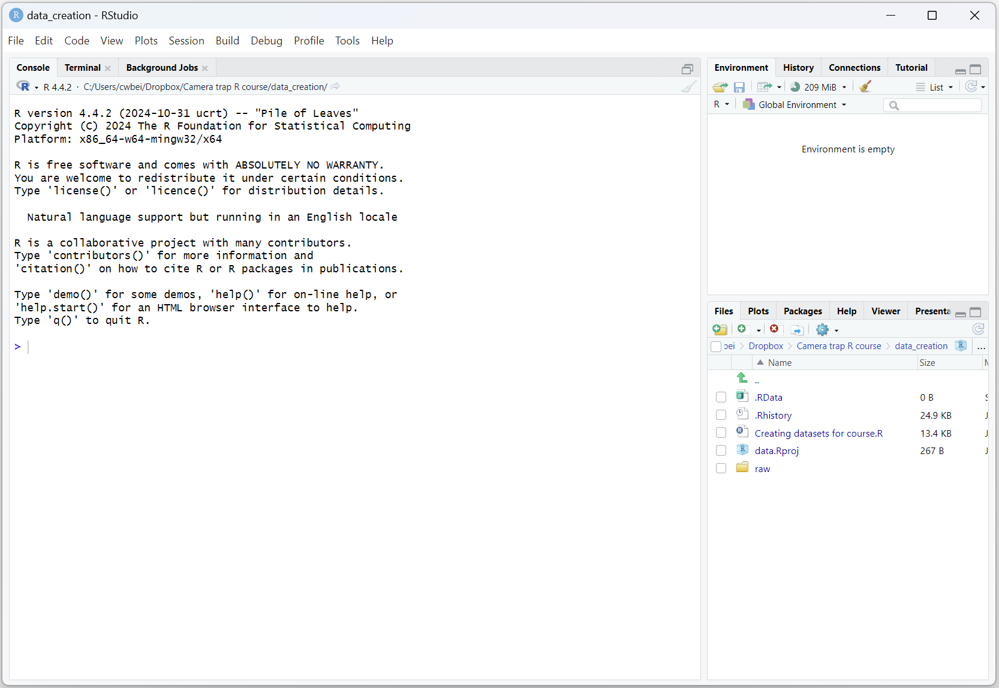

Camera trap course preparation files
2022-10-22
1 Preparing for the course
In order to prepare for the Columbia Mountain Institute’s “An Introduction to Camera Trap Data Management and Analysis in R” course. You must:
- Install R
- Install R Studio
- Install associated R packages
- Create an R project
- Put the example data in the R project
The steps to do this are outlined below:
If you get stuck send me an email!
1.1 Install R
Windows Click on this link and then Download R-4.2.1 for Windows.
Mac Click on this link and then the R-4.2.1.pkgs link.
If you already have R please update your R client so that it is on at least version 4.2.1. Checkout the installR package to this directly from the terminal.
1.2 Install RStudio
Through the course we will use RStudio to interact with R. Please download RStudio Desktop (Free) from the RStudio website. Alternatives to RStudio exist and we are happy if you want to use one of those instead!
Installation check
Open RStudio. If all has gone well you should see something like this:

1.3 Install the required packages
The next step is to install the packages required for the course. We need to do this in two steps: first, install packages which are on CRAN (the Comprehensive R Archive Network), and then install those which are not.
Finally, we have provided the links to install and setup R Google Earth Engine (rgee). This is an optional step for advanced users only - we will not be using it in the course!
1.3.1 CRAN packages
Copy and paste the following code into your R terminal and press enter. Note - if you hover over the code block a copy button appears in the top right.
# A list of the required packages
list.of.packages <- c("activity",
"corrplot",
"cowplot",
"dplyr",
"elevatr",
"gfcanalysis",
"ggplot2",
"gridExtra",
"iNEXT",
"kableExtra",
"Hmsc",
"leaflet",
"lme4",
"lubridate",
"magrittr",
"MCMCvis",
"MODISTools",
"osmdata",
"pals",
"plotly",
"remotes",
"rmarkdown",
"sf",
"spOccupancy",
"stars",
"stringr",
"terra",
"tibble",
"tidyr",
"unmarked",
"viridis",
"installr",
"jtools",
"vegan",
"MuMIn")
# A check to see which ones you have and which are missing
new.packages <- list.of.packages[!(list.of.packages %in% installed.packages()[,"Package"])]
# Code which tells R to install the missing packages
if(length(new.packages)) install.packages(new.packages)
lapply(list.of.packages, require, character.only = TRUE)1.3.2 Other packages
Some packages must be compiled from sources other than CRAN.
Windows users: you must install RTools on your computer using this link.
Close and re-open R Studio, then copy and paste following code block into your R console and press enter.
# We use the remotes package to access package repositories not on the CRAN interface (e.g. on github)
library(remotes)
remotes::install_github("RS-eco/traitdata", build_vignettes = T, force=T)
remotes::install_github("arcaravaggi/remBoot")
remotes::install_github("annam21/spaceNtime", build_vignettes=TRUE)1.4 Create an R project
If you do not already work within R projects - you should! It allows you to work on multiple projects at the same time, and makes specifying file paths much simpler. Finally, if you want to incorporate GiHub into your workflows in the future, the use of R Projects is essential!
To create an R project for this course:
Step 1 Click on File -> New project

Step 2 Click New Directory

Step 3 Then click New Project

Step 4 Give your project a name and choose a folder to save it in (you do not have to copy the options here):

Step 5 Then click Create Project
The best thing about R Projects is that all the files contained within it can be specified relative to the project folder - no more long file paths to deal with! Currently the ‘Files’ tab in the bottom right should be empty (aside from the .rproj file):

Take note of the file path in the image above. For me it is C:/Users/Dropbox/wildco_R_course as this is where you will copy the data files to in later steps. You can also go straight to the root directory the project by clicking the three dots to the right of the file path in the Files tab!
Next, lets download the data files we need for this course!
1.5 Download the data files
Step 1 Click on the following dropbox link:
Data Management and Analysis Files
Step 2 Click download:

Step 3 Extract the files (it doesn’t matter where to), then open the data_for_intro_to_camera_traps folder and copy the data folder it contains.

Step 4 Then paste the data folder into your newly created R project folder.

Step 5 If everything has worked, your `Files’ window in R Studio should now look like this:

And you are ready for the course!
1.6 The example datasets
If you navigate through data > raw_data you will see that there are two files. One called example_data the other called your_data. They are summarised below:
1.6.1 example_data
We have provided a subset of data derived from the WildCo Lab’s “Algar Restoration Project”. In the interest of teaching and code processing times, we have not provided a full dataset. Rather the data represent a sub-sample of sites (38 of 73 available) and years (2 of 4 available).
If you want more information on this project, see the following papers (and the archived datasets they contain):
1.6.2 your_data
The your_data folder contains files I have provided. This is the subset of an unpublished (and as yet un-analysed) dataset. I will leave it to you to find out more about it during the course!
You can replace this data set with your own if you wish. If you want to use your own data it MUST be in ‘Wildlife Insights’ format - see the descriptions here and for a existing example/template see here. NOTE delete the description row if you are using your own data.
The green/bolded columns shown in the template example are the absolute minimal essential columns - you can have more columns with other information!
1.7 A bonus, non essential, package
All of the packages above work with R alone. However, the R Google Earth Engine package rgee needs to interface with Python. For this reason, we will not be using this package during this course.
We have, however, provided some example code if you want to try it in your own time. The first step is to install the rgee package.
install.packages("rgee")
library("rgee")Then follow the steps in this tutorial: Introduction to rgee
If you want to try this, good luck. It can be a little fiddly to get running!
1.8 Practise before the course
Finally, if you want to practice your R skills before the course, here are two (of many) great resources out there:
R Programming for Beginners | Complete Tutorial | R & RStudio - Some great introductory videos to working in R
Modern R with the tidyverse - A book introducing tidyverse data manipulation